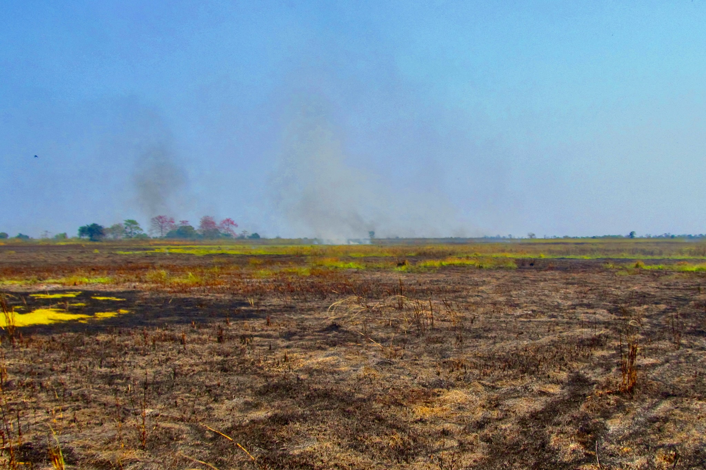
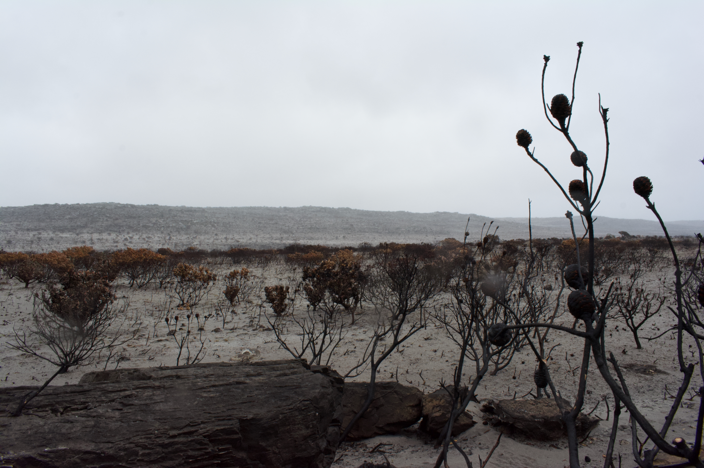
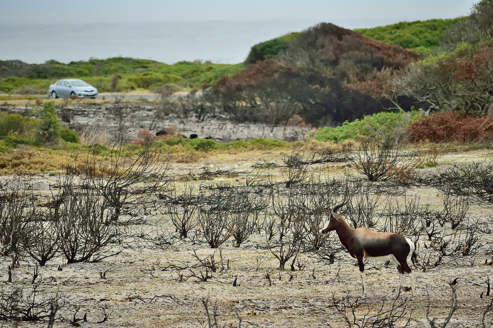
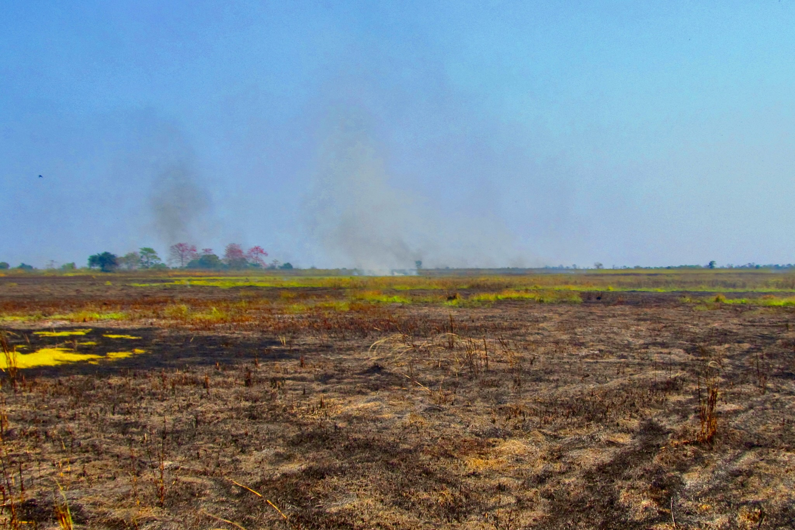
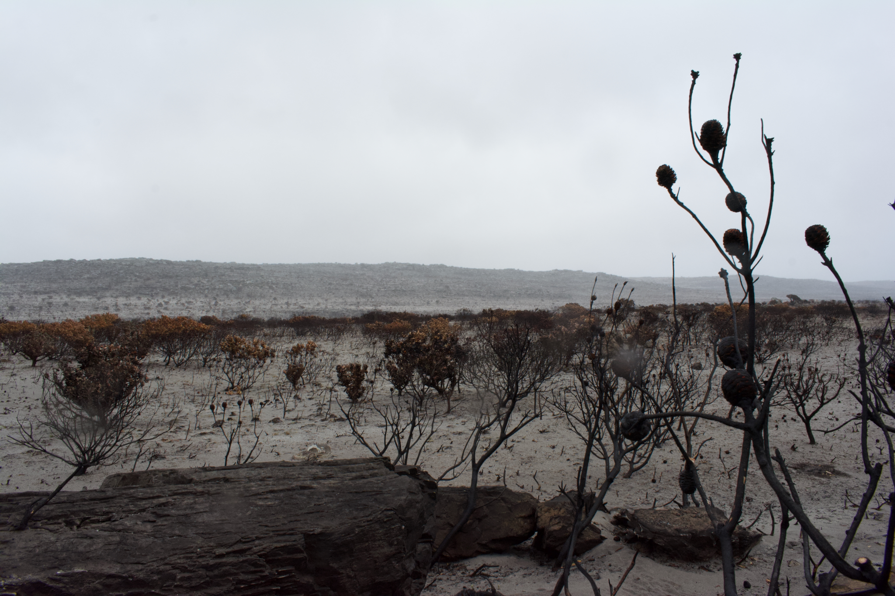
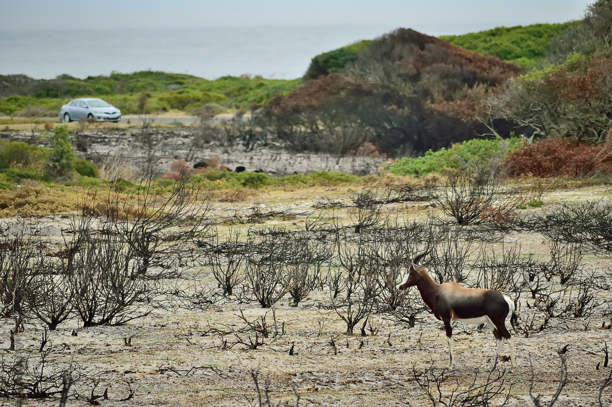

2.4 Biological effects
Wildfires significantly impact ecosystems and biological communities. They can destroy habitats, leading to immediate loss of biodiversity and disruption of food webs. Many species, particularly those that are non-adapted to fire, suffer from population declines or displacement. On the other hand, wildfires can also play a crucial role in certain ecosystems by promoting the regeneration of fire-adapted plants, clearing dead material, and returning nutrients to the soil. This cyclical process can enhance biodiversity in the long term, as new growth attracts a variety of species. However, the increasing frequency and intensity of wildfires, often exacerbated by climate change and human activity, are pushing biological communities to changes at a pace much faster than their pace of adaptation. This poses serious challenges to ecosystem resilience and biodiversity conservation.
2.4.1 Changes in habitat
Wildfires induce profound alterations in habitats across various scales, impacting terrestrial, aquatic, and aerial environments. The immediate and long-term effects on these habitats can be significant and multifaceted.
Wildfires lead to the degradation and destruction of terrestrial habitats as trees and plants are consumed by flames (Bosso et al. 2018; McGarigal, Cushman, and Regan 2005). This destruction reduces the availability of critical resources such as food (Apfelbaum and Haney 1981; Nkwabi et al. 2011), shelter, and nesting sites for wildlife (Brooker and Rowley 1991; Peterson, Dodson, and Harrod 2023; Stillman et al. 2019), as depicted in figure 2.5. The loss of vegetation can destabilize soil, increase erosion, and contribute to the loss of habitat complexity, so crucial for supporting diverse species.
 

Figure 2.5: Some effects of wildfires on wildlife habitats.
Wildfires also adversely affect aquatic habitats through several mechanisms. Elevated temperatures from wildfires can raise water temperatures, negatively impacting aquatic organisms (Schindler 2017). Additionally, hazardous chemicals from wildfires can be transported into water bodies, further compromising water quality (Scordo et al. 2021). Runoff from burned areas can introduce excessive nutrients into aquatic systems, potentially leading to chemical toxicity and eutrophication (Vashukevich et al. 2023). This process promotes the rapid growth of aquatic plants, which can obstruct animal movement and deplete oxygen levels as plant biomass decomposes. The resulting anoxic conditions can lead to widespread fish kills and disrupt aquatic ecosystems.
The impact on aerial habitats is also significant. Smoke, heat, and airborne chemicals from wildfires can impair the health of birds and other aerial species (Stuart-Smith, Adams, and Larsen 2002). Smoke can reduce air quality and visibility, affecting foraging and migratory behavior of organisms. High temperatures and presence of toxic substances in the atmosphere can also lead to respiratory issues and other health problems in birds.
Wildfires profoundly disrupt soil microbial communities and cause widespread destruction that alters the nutrient cycling dynamics within an ecosystem (Eckdahl, Kristensen, and Metcalfe 2023; Elliott et al. 2013). The intense heat and combustion associated with wildfires can kill beneficial microorganisms crucial for decomposing organic matter and recycling nutrients. This disruption can lead to changes in the availability of nutrients, affecting plant growth and overall ecosystem productivity.
In addition to disrupting nutrient cycling, wildfires can also modify the microclimate20 of the affected area (Brown, Mali, and Forstner 2014; Wolf et al. 2021). Loss of vegetation and changes in soil properties can alter temperature and moisture levels, further influencing the local climate and affecting the survival of plant and animal species. Such changes can have cascading effects on the ecosystem, influencing everything from species composition to habitat structure (Awadhiya 2021).
Long-term impacts of these disruptions can lead to significant habitat changes and may even reset the process of ecological succession (Dawe et al. 2021). Ecological succession refers to the gradual process of change and development in an ecosystem following a disturbance. Wildfires, especially when they occur frequently, can reset this process, leading to the formation of a new, often less diverse community known as a disclimax community (Awadhiya 2021), which is characterized by reduced heterogeneity and decreased biological diversity compared to pre-fire conditions (L. Zhang et al. 2021; Pastro, Dickman, and Letnic 2011). This shift can alter the structure and function of the ecosystem, leading to long-term changes in habitat quality and the ability of the area to support a diverse range of species.
Wildfires also have significant impacts on soil seed banks and wildlife, leading to profound ecological changes. Many soil seed banks, which are crucial for the regeneration of plant communities, are destroyed by the intense heat of wildfires (Maia et al. 2012). The loss of these seed banks can delay or inhibit the recovery of vegetation, affecting the overall resilience of the ecosystem.
In addition to affecting plant life, wildfires also displace numerous animal species and birds from their natural habitats. The destruction of native species and their habitats creates opportunities for invasive species to establish themselves (Rew and Johnson 2010). Invasive species can in turn alter the fire regime of the area, often by making forests more susceptible to future wildfires (Faccenda and Daehler 2022). This shift can create a cycle where frequent fires facilitate the spread of more fire-prone (and even fire-dependent) invasive species, further exacerbating the problem.
Larger animals requiring extensive home ranges are particularly vulnerable to habitat loss caused by wildfires. Species of top predators (e.g., tigers) and ecosystem engineers (e.g., elephants) are especially severely impacted since they often have large home range requirements. Local extinction of these animals can lead to trophic cascades, where the absence of a key species disrupts the balance of the entire ecosystem, resulting in long-term ecological changes (Awadhiya 2021; Banks et al. 2011). For example, loss of top predators can lead to an overabundance of prey species, which in turn affects vegetation and other aspects of the ecosystem.
Conversely, smaller, r-selected organisms, such as rodents and insects, may thrive in the vacant niches left by wildfires. These organisms reproduce rapidly and can proliferate in the disturbed environment. While their increased numbers can contribute to ecological succession, they also have several potential downsides. Many of these smaller organisms are carriers of diseases, and their proliferation can impact food security and public health in the region. Their presence may also contribute to the spread of zoonotic diseases and affect the overall epidemiology of the area.
Destruction of critical habitats and habitat connectivity corridors caused by wildfires has particularly severe consequences for endangered species (Butcher 2019; Khosravi et al. 2022; Tracey et al. 2018). These species often rely on specific and interconnected habitats to survive and thrive. The loss of these habitats can significantly impact their populations and ability to persist and survive.
Wildfires often lead to the death of unique and rare species (Ager et al. 2007), as well as to a reduction in genetic diversity. Loss of genetic diversity is crucial because it affects the species’ ability to adapt to changing conditions and recover from environmental stressors. Additionally, wildfires can disrupt wildlife reproduction and population recruitment, further exacerbating the threats faced by endangered species (Awadhiya 2021; Lam et al. 2020; Potvin et al. 2017).
The combined effects of habitat destruction, loss of genetic diversity, and disruptions to reproductive processes can accelerate extinction vortices, where populations decline rapidly and become increasingly vulnerable to extinction (M. Bond and Bradley 2003; Lindenmayer and Possingham 1995; Santelices et al. 2022). As endangered species struggle to survive in the face of these compounded threats, they may be pushed towards complete extinction.
Extinction of species has further lasting impacts on the ecosystem, potentially altering the ecological balance and functioning of the area permanently. Loss of key species can disrupt ecological processes, food webs, and habitat structures, leading to long-term changes in the ecosystem’s composition and function.
The impact is particularly severe for species and biological communities that are already under stress. Habitat degradation — driven by the introduction of pollutants and physical changes induced by wildfires — often precedes habitat loss. Such degradation can have significant consequences for biodiversity, potentially contributing to the extinction of species over intermediate and long-term periods.
In this way, wildfires pose a critical threat to endangered species by destroying their habitats, reducing genetic diversity, and disrupting reproductive processes, pushing species toward extinction and causing permanent changes to the ecosystems they inhabit. Addressing these challenges requires targeted conservation efforts and strategies to mitigate the impacts of wildfires and support the recovery of affected species and ecosystems.
2.4.2 Death and displacement of organisms
Wildfires result in the death of numerous plants and animals, either directly through burning or indirectly through subsequent exposure to smoke and hazardous chemicals. The impacts extend beyond immediate mortality, as many organisms suffer lingering deaths due to habitat destruction, environmental stressors, and loss of food sources. The destruction of vegetation not only leads to an immediate loss of carbon sequestration capacity but also consequently reduces the availability of food for herbivores, which in turn affects the entire food chain.
Wildfires significantly alter wildlife behavior and migration patterns. Destruction of habitats and changes in community structures are known to modify wildlife behavior (Sanderfoot et al. 2021) and migration patterns (Lewis et al. 2022; Overton et al. 2022). Simplification of ecological communities due to species loss and disruption of species interactions reduces the resistance and resilience of the ecosystem to future disturbances (Brehme et al. 2011; G. Davies et al. 2012; McWethy et al. 2019). This process not only exacerbates the long-term ecological impacts of wildfires but also accelerates the risk of extinction for various organisms.
The combined effects of habitat destruction, altered migration patterns, and decreased ecological resilience create a cascading series of consequences that extend well beyond the immediate aftermath of a wildfire. These changes contribute to a gradual erosion of biodiversity and can push species closer to extinction, further destabilizing ecosystems and reducing their capacity to recover from future disturbances.
References
A microclimate is a small, localized climate that differs from the surrounding area. It is often influenced by factors like topography, vegetation, and human activity. Examples include shaded areas under trees, urban heat islands, or regions near bodies of water. Microclimates can significantly affect local flora and fauna.↩︎